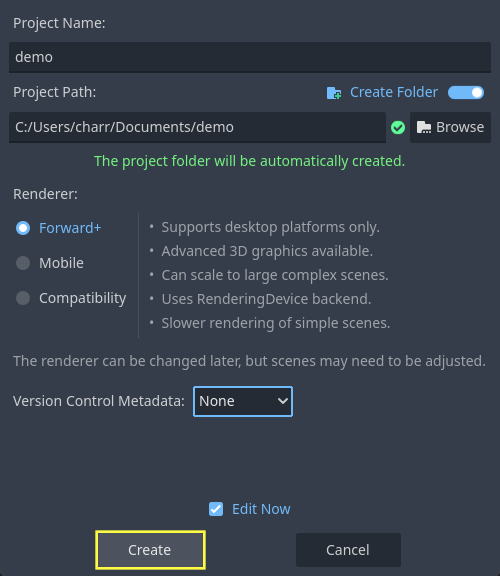
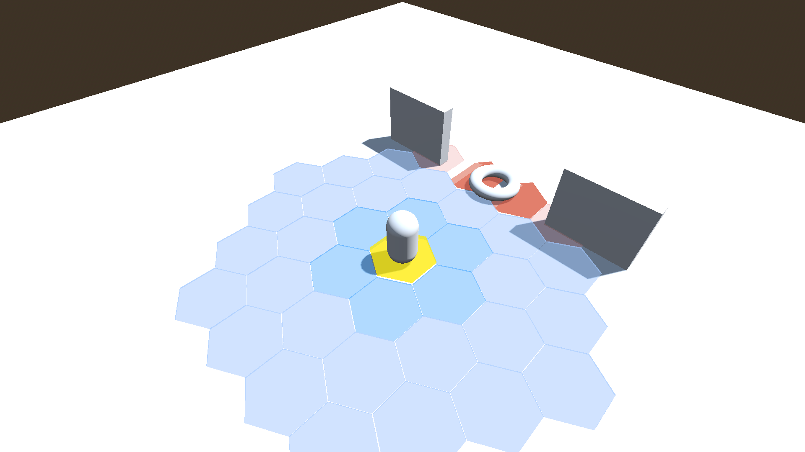

Tutorial - InteractiveGrid3D
Note
GitHub repository: https://github.com/antoinecharruel/interactive_grid_gdextension/tree/master/tutorial_demo_3d.
1 - Getting Started
Launch Godot, create a new project, choose a location, and give it a name.
{kind=link}
- In Godot, click AssetLib.
Search for
Interactive Grid GDExtension.Download and install.

2 - Setting Up the Playable Area
Create the Root Node
Click + and select
3D Scene.Rename the root Node Node3D ->
"World".
Add the Floor
Select
World, click +, choose MeshInstance3D.Rename it
"Floor".Set
Transform->Scaleto 20.0, 20.0, 20.0.
Add Collision to the Floor
With
Floorselected, click Mesh ->Create Collision Shape.Collision Shape Placement:
Static Body Child.Collision Shape Type:
Single Convex.

Set the Collision Layer for The Floor
Select the StaticBody3D Node that was created for the
Floor.In the
CollisionLayer property, set it to 15.
Warning
Assign it to Collision Layer 15. This is important to ensure proper alignment of the grid on the floor.
{kind=link}
Add Light
Preview environment: If no WorldEnvironment Node or DirectionalLight3D Node is present in the current scene, the editor will display a preview environment and sun instead. This can be disabled using the buttons at the top of the 3D editor:

Clicking on the 3 vertical dots on the right will display a dialog which allows you to customize the appearance of the preview environment:
Add a Sun.
Add an Environment.

3 - Creating the Player Scene
Create the Player Scene
New scene, Select 3D Scene.
Select Node3D.
Rename it
"PlayerPawn".
Add the Player Body
Select
"PawnPlayer"Node3D., click +, choose CharacterBody3D.Rename it
"Pawn".Add a visual mesh.
With
Pawnselected, click +, choose MeshInstance3D.In the Mesh property, select CapsuleShape3D.
Hold the Control key and move the CapsuleShape3D. up.
Rename it "Model".
Attach a CollisionShape3D to the Player
Select the
PawnNode, click +, and add a ColissionShape3D.In the Mesh property, select CapsuleShape3D.
Hold the Control key and move the CapsuleShape3D up.
Attach a Camera3D to the Player
Select the
PawnNode, click +, and add a Camera3D Node.Set the
Transform-> Position to 6.0, 10.0, 6.0.Set FOV to 60.0° .
Set Rotation X to -45.0° and Rotation Y to 45.0°.
4 - Moving the player with code
Select
"Pawn", then attach "pawn.gd" script to the player.
This script allows moving the player from point A to point B in the world.
# pawn.gd
extends CharacterBody3D
@onready var model: MeshInstance3D = $Model
@onready var interactive_grid_3d: InteractiveGrid3D = $"../InteractiveGrid3D"
const SPEED:float = 5.0
func _physics_process(delta: float) -> void:
# Add the gravity.
if not is_on_floor():
velocity += get_gravity() * delta
move_and_slide()
func move_to(global_position: Vector3)-> void:
var pawn_global_position:Vector3 = self.global_position
var target_global_position: Vector3 = Vector3(global_position.x, pawn_global_position.y, global_position.z)
var direction:Vector3 = (target_global_position - pawn_global_position).normalized()
var distance_to_target: float = pawn_global_position.distance_to(target_global_position)
self.velocity = direction * SPEED
var dir: Vector3 = (target_global_position - model.global_position)
dir.y = 0
dir = dir.normalized()
var target_rot: float = atan2(-dir.x, -dir.z)
model.rotation.y = lerp_angle(model.rotation.y, target_rot, 0.2)
move_and_slide()
5 - Raycast From Mouse
Add a Raycast3D Node
Select
PawnPlayer.Click + and add a Raycast3D Node.
Rename it “RayCastFromMouse”.
Attach the Script
Select RayCastFromMouse.
Click on the Attach Script icon and fill it.
This script allows you to send a raycast from the mouse to get the world coordinates. It will be useful for selecting a cell on the grid.
# ray_cast_from_mouse.gd
extends RayCast3D
@onready var camera_3d: Camera3D = $"../Pawn/Camera3D"
@export var debug_sphere_raycast: MeshInstance3D
func _ready() -> void:
debug_sphere_raycast = MeshInstance3D.new()
debug_sphere_raycast.mesh = SphereMesh.new()
var mat_target: StandardMaterial3D = StandardMaterial3D.new()
mat_target.albedo_color = Color.GREEN
debug_sphere_raycast.material_override = mat_target
debug_sphere_raycast.scale = Vector3(0.3, 0.3, 0.3)
add_child(debug_sphere_raycast)
debug_sphere_raycast.visible = false
func _process(delta: float) -> void:
debug_sphere_raycast.global_transform.origin = get_ray_intersection_position()
func get_ray_intersection_position() -> Vector3:
var intersect_ray_position: Vector3 = Vector3.ZERO
var mouse_pos:Vector2 = get_viewport().get_mouse_position()
var ray_origin:Vector3 = camera_3d.project_ray_origin(mouse_pos)
var ray_direction:Vector3 = camera_3d.project_ray_normal(mouse_pos)
var ray_length:int = 2000
self.global_position = ray_origin
self.target_position = ray_direction * ray_length
self.collide_with_areas = false
self.collision_mask = 0
self.set_collision_mask_value(15, true)
self.set_collision_mask_value(1, false)
self.force_raycast_update()
if self.is_colliding():
var collider:Node3D = self.get_collider()
intersect_ray_position = self.get_collision_point()
#print("[get_ray_intersection_position] Collision detected at: ", intersect_ray_position)
#print("[get_ray_intersection_position] Collision detected with: ", collider.name)
return intersect_ray_position
6 - Configuring the Interactive Grid
Add InteractiveGrid3D
Select PlayerPawn, click +, and add a InteractiveGrid3D Node.
Set Grid Size
Rows: 13Columns: 13
Add a Cell Size
Which dimensions should we choose?
Assuming cell_size.x = 1.0
"The size of a regular hexagon can be described by either the inner circle, touching the edges, or the outer circle, touching the corners." Hexagonal Grids Basics
Finding the inradius (r):
The vertical distance is given by √3 * the inradius.
Since cell_size.x = 2 * the inradius:
inradius =
cell_size.x/ 2cell_size.y= √3 * inradius.cell_size.y= 0.866
Add a Cell Mesh
Select InteractiveGrid3D, go to the Inspector -> Cell Mesh property.
Click on the mesh field and select CylinderMesh.
Which dimensions should we choose?
Top_radius= Circumradius (R)Bottom_radius= Circumradius (R)
Finding the Circumradius (R):
We know that:
inradius (r) = a · √3 / 2 = 0.5
side length (a) = r * 2 / √3 = 0.577
circumradius (R) = a = 0.577
Therefore:
Top_radius= a = 0.577Bottom_radius= a = 0.577Height= 0.1
To create a hexagonal shape:
Radial Segments:6
Add a Cell Shape
Select
Cell Shape property.Click on the mesh field and select CylinderShape3D.
Height= 6Top_radius= inradius =cell_size.x/ 2 = 0.5Bottom_radius= 0.5
Set cell_shape_offset.y to Height / 2, which equals 3.0.
Tip
Add a debug collision shape and include these lines in the script
interactive_grid.gd inside the show_grid() function, and enable Visible Collision Shape
in the Debug tab of the editor.
var cell_global_xform: Transform3D = get_cell_global_transform(cell_index)
var offset:Vector3 = get_cell_shape_offset()
var offset_xform:Transform3D = Transform3D(Basis.IDENTITY, offset)
debug_collision_shape_area_3d.global_transform = cell_global_xform * offset_xform
Multiply all values by two to double the size of the grid cells.
cell_sizecell_size_x= 2cell_size_y= 1.732
cell_meshHeight= 6Top_radius= 1.14Bottom_radius= 1.14
cell_shapeHeight= 6Top_radius= 1
{kind=link}
Set Layout
Select
Layout property.Click on the dropdown menu and select
HEXAGONAL.
Set Movement
Select
Movement property.Click on the dropdown menu and select
SIX-DIRECTIONS.
7 - Interactive Grid Scripting
Attach a Script
Select the
InteractiveGrid3DNode.Click Attach Script.
Fill in the script.
# interactive_grid_3d.gd
extends InteractiveGrid3D
@onready var ray_cast_from_mouse: RayCast3D = $"../RayCastFromMouse"
var _path: PackedInt64Array = []
var _pawn: CharacterBody3D = null
var _show_grid: bool = false
@onready var debug_collision_shape_area_3d: CollisionShape3D = $"../DebugCollisionShapeArea3D/DebugCollisionShapeArea3D"
func _ready() -> void:
_show_grid = false
func _process(delta: float) -> void:
if _show_grid == false and self.visible:
self.set_visible(false)
if self.get_selected_cells().is_empty():
self.highlight_on_hover(ray_cast_from_mouse.get_ray_intersection_position())
else:
move_along_path(_path)
func show_grid():
#region InteractiveGrid3D Center
## Here, the grid is centered around the player.
## !Note: This operation repositions all cells, aligns them with the environment,
## rescans obstacles and custom data, and refreshes A* navigation.
## - Manual modifications can also be applied here, such as:
## - Hiding cells beyond a certain distance
## - compute_unreachable_cells
## - Adding custom data
#endregion
if _pawn == null:
return
print("show_grid")
_show_grid = true
_path = []
self.set_visible(true)
self.center(_pawn.global_position)
var pawn_current_cell_index: int = self.get_cell_index_from_global_position(_pawn.global_position)
# To prevent the player from getting stuck.
self.set_cell_accessible(pawn_current_cell_index, true)
self.set_cell_reachable(pawn_current_cell_index, true)
self.hide_distant_cells(pawn_current_cell_index, 6)
self.compute_unreachable_cells(pawn_current_cell_index)
#region update_custom_data()
## !Note: Don't forget to call update_custom_data().
## It refreshes custom_cell_flags, colors, and the A* configuration
## based on the newly updated CellCustomData.
#endregion
self.update_custom_data()
func _input(event):
if event is InputEventMouseButton and event.button_index == MOUSE_BUTTON_LEFT:
if _pawn == null:
return
var ray_pos: Vector3 = ray_cast_from_mouse.get_ray_intersection_position()
if ray_pos == null:
return
var selected_cells: Array = self.get_selected_cells()
if selected_cells.size() < 1:
var hit_cell_index: int = self.get_cell_index_from_global_position(ray_pos)
self.select_cell(hit_cell_index)
selected_cells = self.get_selected_cells()
if selected_cells.is_empty():
return
var pawn_current_cell_index: int = self.get_cell_index_from_global_position(self.get_center_global_position())
self.set_cell_accessible(pawn_current_cell_index, true)
_path = self.get_path(pawn_current_cell_index, selected_cells[0])
print("Last selected cell:", self.get_latest_selected())
print("Path:", _path)
self.highlight_path(_path)
func move_along_path(path: PackedInt64Array)-> void:
if path.is_empty():
show_grid()
return
var target_cell_index: int = path[0]
var target_global_position: Vector3 = get_cell_global_position(target_cell_index)
if not is_on_target_cell(_pawn.global_position, target_global_position, 0.20):
reaching_cell_target(target_cell_index, path)
else:
target_cell_reached()
func reaching_cell_target(target_cell_index: int, path: PackedInt64Array) -> void:
if _path.size() > 0:
var target_cell_global_position: Vector3 = self.get_cell_global_position(target_cell_index)
if _pawn.has_method("move_to"):
_pawn.move_to(target_cell_global_position)
else:
printerr("pawn does not have the 'move_to' method.")
func target_cell_reached():
if not _path.is_empty():
_path.remove_at(0)
static func is_on_target_cell(current_global_position: Vector3, target_global_position: Vector3, threshold: float) -> bool:
return current_global_position.distance_to(target_global_position) <= threshold
func set_pawn(pawn: CharacterBody3D):
_pawn = pawn
Input
Add an input action to allow opening the grid using the
Space key.Go to Project -> Project Settings ->
Input Maptab.Click Add New Action.
Enter "show_grid".
Click Add.
Click the `+` button next to the action.
Assign the
Space keyas the input.
Add the following code block at the end of the pawn.gd script:
func _input(event):
if event.is_action_pressed("show_grid"):
interactive_grid_3d.set_pawn(self)
interactive_grid_3d.show_grid()
8 - Preparing the World Scene
Add the Player Pawn scene to the World scene.
Create a wall.
Add a parent Node for the walls.
Click +, select Node3D.
Rename it
"Walls".
Add the wall mesh.
Select Walls, click +, choose MeshInstance3D.
Set Transform -> Scale to 3.0, 3.0, 0.5.
Add collision.
Set the
Collision ShapeType toSingle Convex.Assign the StaticBody3D to
Collision Layer 14.
Warning
Assign it to Collision Layer 14. This is important to ensure that the grid correctly detects obstacles.
9 - Add Custom Shader
It is possible to add a custom shader to the grid.
Each grid cell has states stored in a bitmask. The flags can be retrieved via the alpha channel of INSTANCE_CUSTOM.
Example of retrieving default flags:
// Default cell flags:
const int CFL_ACCESSIBLE = 1 << 0;
const int CFL_REACHABLE = 1 << 1;
const int CFL_IN_VOID = 1 << 2;
const int CFL_HOVERED = 1 << 3;
const int CFL_SELECTED = 1 << 4;
const int CFL_PATH = 1 << 5;
const int CFL_VISIBLE = 1 << 6;
void vertex() {
instance_c = INSTANCE_CUSTOM;
int cell_flag = int(instance_c.a);
Click on
InteractiveGrid3D->MaterialOverride-> ShaderMaterial.In the
Shaderfield, click New Shader.Name it interactive_grid.gdshader.
Example shader script:
// interractive_grid.gdshader
shader_type spatial;
render_mode unshaded, cull_disabled, depth_draw_opaque;
varying vec4 instance_c;
varying vec4 instance_c_default;
varying float alpha;
// Default cell flags:
const int CFL_ACCESSIBLE = 1 << 0;
const int CFL_REACHABLE = 1 << 1;
const int CFL_IN_VOID = 1 << 2;
const int CFL_HOVERED = 1 << 3;
const int CFL_SELECTED = 1 << 4;
const int CFL_PATH = 1 << 5;
const int CFL_VISIBLE = 1 << 6;
void vertex() {
instance_c = INSTANCE_CUSTOM;
int cell_flag = int(instance_c.a);
alpha = 0.5;
if ((cell_flag & CFL_ACCESSIBLE) == 0) {
alpha = 0.20;
}
if ((cell_flag & CFL_PATH) != 0) {
VERTEX.y += sin(TIME * 4.0 + VERTEX.x * 2.0) * 0.2;
}
if ((cell_flag & CFL_HOVERED) != 0) {
VERTEX.y += sin(TIME * 4.0) * 0.2;
}
if ((cell_flag & CFL_VISIBLE) == 0) {
alpha = 0.0; // invisible
}
if ((cell_flag & CFL_REACHABLE) == 0) {
alpha = 0.0; // invisible
}
if ((cell_flag & CFL_IN_VOID) != 0) {
alpha = 0.0; // invisible
}
}
void fragment() {
if (alpha == 0.0) {
discard;
}
ALBEDO = instance_c.rgb;
EMISSION = instance_c.rgb;
ALPHA = alpha;
}
10 - Add Custom Cell Data
It is also possible to add additional states to specific cells, on top of the default cell states.
There are two ways to achieve this:
Add a
CustomCellDatausing a collision mask.Add a
CustomCellDatavia code to a specific cell.
Example: Adding a Trap That Interacts with the Grid
Let's imagine you want to add a trap to your world and make it interact with the grid.
Trap setup in the World scene.
Select the World scene.
Add a MeshInstance3D.
Assign a TorusMesh. to it.
Rename the Node to BearTrap.
Add a StaticBody3D as a child with a CollisionShape3D set to
Single Convex.Place the trap between the two walls.
Select the StaticBody3D:
Set its Collision Layer to 11.
Disable Collision Layer 1 to prevent collisions with the player.
Configure CustomCellData on the grid
Select
InteractiveGrid3D.In the
CustomCellDatafield, click Add Element.Create a new
CustomCellDataentry.Set the Name to
CFL_TRAP.Set the Layer Mask to 11 only.
Set the Collision Layer to 11 (the same layer as the trap).
Enable Use Custom Color and choose an orange color: #ff5d44.
When you run the game, the grid cells corresponding to the trap will be displayed in orange.
Accessing CustomCellData in the Shader
You can also retrieve the CustomCellData inside your shader and use it to modify the affected cells.
First, define the flag constant:
const int CFL_TRAP = 1 << 10;
Then use it in the shader logic:
if ((cell_flag & CFL_TRAP) != 0) {
VERTEX.y += sin(TIME * 4.0 + VERTEX.x * 2.0) * 0.2;
}
This allows you to visually modify the trap cells directly at the shader level.
Combining CustomCellData
CustomCellData entries can be combined on the same cell.
For example, you can create an additional CustomCellData that represents a visual effect and combine it with an existing one (such as a trap).
Example: Pulsation effect
Create a new
CustomCellDataentry.Custom Data Name: CFL_PULSE
Layer Mask : 9
Collision Layer : None
Custom color: False
A cell can now have multiple CustomCellData flags at the same time (CFL_TRAP + CFL_PULSE), allowing you to stack behaviors and visual effects.
In the shader script, define a new flag for the pulsation effect:
const int CFL_PULSE = 1 << 8;
vec3 pulse_color(vec3 base_color, float speed, float min_val, float max_val) {
float center = (min_val + max_val) * 0.5;
float range = (max_val - min_val) * 0.5;
return base_color * (sin(TIME * speed) * range + center);
}
void vertex() {
//...
if ((cell_flag & CFL_PULSE) != 0) {
instance_c.rgb = pulse_color(vec3(instance_c.rgb), 4.0, 0.3, 0.8);
}
//...
}
This shader code applies a pulsating color effect to any grid cell that has the CFL_PULSE flag enabled.
{kind=link}
Assign CustomCellData via GDScript
It is also possible to assign CustomCellData to specific cells via GDScript.
For example:
var neighbors: PackedInt64Array = self.get_neighbors(pawn_current_cell_index)
for neighbor_index in neighbors:
self.add_custom_cell_data(neighbor_index, "CFL_NEIGHBORS")
self.add_custom_cell_data(pawn_current_cell_index, "CFL_PLAYER")
self.update_custom_data()
Warning
Don't forget to call update_custom_data().
It refreshes custom_cell_flags, colors, and the A* configuration
based on the newly updated CellCustomData.
Final Scripts
# interactive_grid_3d.gd
extends InteractiveGrid3D
@onready var ray_cast_from_mouse: RayCast3D = $"../RayCastFromMouse"
var _path: PackedInt64Array = []
var _pawn: CharacterBody3D = null
var _show_grid: bool = false
@onready var debug_collision_shape_area_3d: CollisionShape3D = $"../DebugCollisionShapeArea3D/DebugCollisionShapeArea3D"
func _ready() -> void:
_show_grid = false
func _process(delta: float) -> void:
if _show_grid == false and self.visible:
self.set_visible(false)
if self.get_selected_cells().is_empty():
self.highlight_on_hover(ray_cast_from_mouse.get_ray_intersection_position())
else:
move_along_path(_path)
func show_grid():
#region InteractiveGrid3D Center
## Here, the grid is centered around the player.
## !Note: This operation repositions all cells, aligns them with the environment,
## rescans obstacles and custom data, and refreshes A* navigation.
## - Manual modifications can also be applied here, such as:
## - Hiding cells beyond a certain distance
## - compute_unreachable_cells
## - Adding custom data
#endregion
if _pawn == null:
return
if not self.is_grid_created():
return
print("show_grid")
_show_grid = true
_path = []
self.set_visible(true)
self.center(_pawn.global_position)
var pawn_current_cell_index: int = self.get_cell_index_from_global_position(_pawn.global_position)
# To prevent the player from getting stuck.
self.set_cell_accessible(pawn_current_cell_index, true)
self.set_cell_reachable(pawn_current_cell_index, true)
self.hide_distant_cells(pawn_current_cell_index, 6)
self.compute_unreachable_cells(pawn_current_cell_index)
var cell_global_xform: Transform3D = get_cell_global_transform(pawn_current_cell_index)
var offset:Vector3 = get_cell_shape_offset()
var offset_xform:Transform3D = Transform3D(Basis.IDENTITY, offset)
debug_collision_shape_area_3d.global_transform = cell_global_xform * offset_xform
var neighbors: PackedInt64Array = self.get_neighbors(pawn_current_cell_index)
for neighbor_index in neighbors:
self.add_custom_cell_data(neighbor_index, "CFL_NEIGHBORS")
self.add_custom_cell_data(pawn_current_cell_index, "CFL_PLAYER")
#region update_custom_data()
## !Note: Don't forget to call update_custom_data().
## It refreshes custom_cell_flags, colors, and the A* configuration
## based on the newly updated CellCustomData.
#endregion
self.update_custom_data()
func _input(event):
if event is InputEventMouseButton and event.button_index == MOUSE_BUTTON_LEFT:
if _pawn == null:
return
var ray_pos: Vector3 = ray_cast_from_mouse.get_ray_intersection_position()
if ray_pos == null:
return
var selected_cells: Array = self.get_selected_cells()
if selected_cells.size() < 1:
var hit_cell_index: int = self.get_cell_index_from_global_position(ray_pos)
self.select_cell(hit_cell_index)
selected_cells = self.get_selected_cells()
if selected_cells.is_empty():
return
var pawn_current_cell_index: int = self.get_cell_index_from_global_position(self.get_center_global_position())
self.set_cell_accessible(pawn_current_cell_index, true)
_path = self.get_path(pawn_current_cell_index, selected_cells[0])
print("Last selected cell:", self.get_latest_selected())
print("Path:", _path)
self.highlight_path(_path)
func move_along_path(path: PackedInt64Array)-> void:
if path.is_empty():
show_grid()
return
var target_cell_index: int = path[0]
var target_global_position: Vector3 = get_cell_global_position(target_cell_index)
if not is_on_target_cell(_pawn.global_position, target_global_position, 0.20):
reaching_cell_target(target_cell_index, path)
else:
target_cell_reached()
func reaching_cell_target(target_cell_index: int, path: PackedInt64Array) -> void:
if _path.size() > 0:
var target_cell_global_position: Vector3 = self.get_cell_global_position(target_cell_index)
if _pawn.has_method("move_to"):
_pawn.move_to(target_cell_global_position)
else:
printerr("pawn does not have the 'move_to' method.")
func target_cell_reached():
if not _path.is_empty():
_path.remove_at(0)
static func is_on_target_cell(current_global_position: Vector3, target_global_position: Vector3, threshold: float) -> bool:
return current_global_position.distance_to(target_global_position) <= threshold
func set_pawn(pawn: CharacterBody3D):
_pawn = pawn
// interractive_grid.gdshader
shader_type spatial;
render_mode unshaded, cull_disabled, depth_draw_opaque;
varying vec4 instance_c;
varying vec4 instance_c_default;
varying float alpha;
// Default cell flags:
const int CFL_ACCESSIBLE = 1 << 0;
const int CFL_REACHABLE = 1 << 1;
const int CFL_IN_VOID = 1 << 2;
const int CFL_HOVERED = 1 << 3;
const int CFL_SELECTED = 1 << 4;
const int CFL_PATH = 1 << 5;
const int CFL_VISIBLE = 1 << 6;
// Custom cell data:
const int CFL_PLAYER = 1 << 7;
const int CFL_NEIGHBORS = 1 << 9;
const int CFL_TRAP = 1 << 10;
const int CFL_PULSE = 1 << 8;
vec3 pulse_color(vec3 base_color, float speed, float min_val, float max_val) {
float center = (min_val + max_val) * 0.5;
float range = (max_val - min_val) * 0.5;
return base_color * (sin(TIME * speed) * range + center);
}
void vertex() {
instance_c = INSTANCE_CUSTOM;
int cell_flag = int(instance_c.a);
alpha = 0.5;
if ((cell_flag & CFL_ACCESSIBLE) == 0) {
alpha = 0.20;
}
if ((cell_flag & CFL_NEIGHBORS) != 0
&& (cell_flag & CFL_PATH) == 0
&& (cell_flag & CFL_TRAP) == 0)
{
if ((cell_flag & CFL_ACCESSIBLE) != 0) {
alpha = 0.40;
instance_c.r = 0.2;
instance_c.g = 0.5;
instance_c.b = 1.0;
}
}
if ((cell_flag & CFL_PATH) != 0) {
VERTEX.y += sin(TIME * 4.0 + VERTEX.x * 2.0) * 0.2;
}
if ((cell_flag & CFL_HOVERED) != 0) {
VERTEX.y += sin(TIME * 4.0) * 0.2;
}
if ((cell_flag & CFL_TRAP) != 0) {
VERTEX.y += sin(TIME * 4.0 + VERTEX.x * 2.0) * 0.2;
}
if ((cell_flag & CFL_PULSE) != 0) {
instance_c.rgb = pulse_color(vec3(instance_c.rgb), 4.0, 0.3, 0.8);
}
if ((cell_flag & CFL_VISIBLE) == 0) {
alpha = 0.0; // invisible
}
if ((cell_flag & CFL_REACHABLE) == 0) {
alpha = 0.0; // invisible
}
if ((cell_flag & CFL_IN_VOID) != 0) {
alpha = 0.0; // invisible
}
}
void fragment() {
if (alpha == 0.0) {
discard;
}
ALBEDO = instance_c.rgb;
EMISSION = instance_c.rgb;
ALPHA = alpha;
}
11 - Run The Game
Here is what the World scene looks like after setting up walls, the floor, and the interactive grid with shaders:
{kind=link}

Every contribution helps maintain and improve this project. And encourage me to make more projects like this!
This is optional support. The tool remains free and open-source regardless.